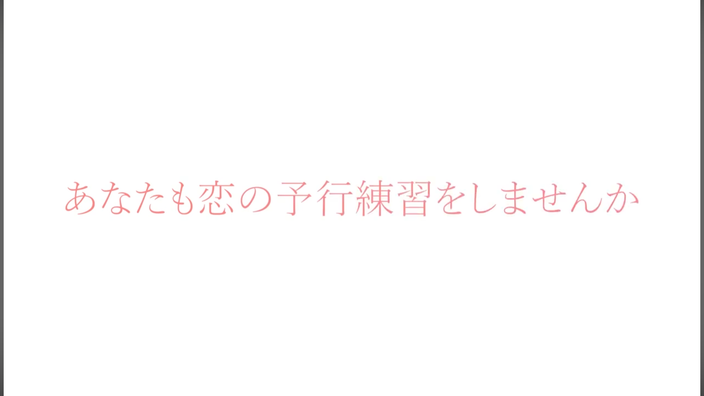
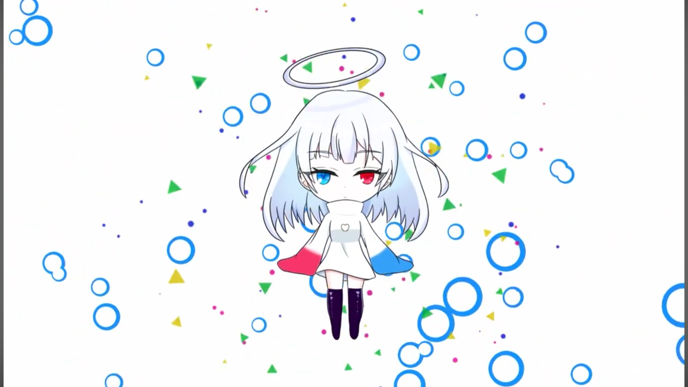

ゲーム内容を伝えるプロモーション映像
展示会で発表するゲームをより多くの人に知ってもらい、 実際に会場へ足を運んでもらうことを目的に制作しました。 動画では、ゲームの流れや特徴を分かりやすく伝えることに加え、 登場キャラクターの魅力も紹介し、 作品に興味を持ってもらえる構成を意識しました。
Hiroto,s Portfolio
担当範囲：構成 / 映像編集 / モーショングラフィックス
恋の告白シミュレーションの プロモーション映像として制作しました。
初めて作品を見る方にもゲームの内容が直感的に伝わるよう、 情報を見せる順番や映像のテンポ感を意識して制作しました。
制作目的
展示会で発表するゲームをより多くの人に知ってもらい、 実際に会場へ足を運んでもらうことを目的に制作しました。 動画では、ゲームの流れや特徴を分かりやすく伝えることに加え、 登場キャラクターの魅力も紹介し、 作品に興味を持ってもらえる構成を意識しました。
編集・演出

ゲームの流れや、 プレイ中にどのような選択を行うのかが 初めて見る人にも伝わるよう、 実際のゲーム画面を順序立てて見せる構成にしました。
また、説明だけの映像にならないよう、 ゲーム内でナビゲーションキャラクターとして登場するAIを 動画内でも案内役として登場させ、 ゲーム本編との一貫性を持たせています。
視聴後にゲームの内容をイメージし、 そのままプレイしてみたいと思ってもらえるよう、 情報量とテンポのバランスも意識しました。
モーショングラフィックス

作品の明るくポップな雰囲気を表現するため、 弾けるようなエフェクトやテンポのある動きを 取り入れました。
また、青春をイメージさせる桜の演出を使用し、 恋愛シミュレーションらしい爽やかさや楽しさが 伝わる映像表現を意識しました。